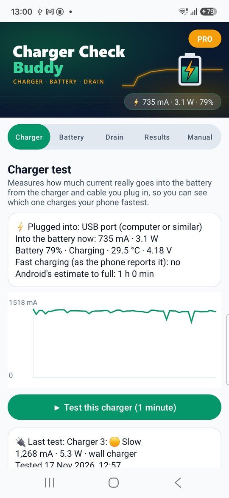
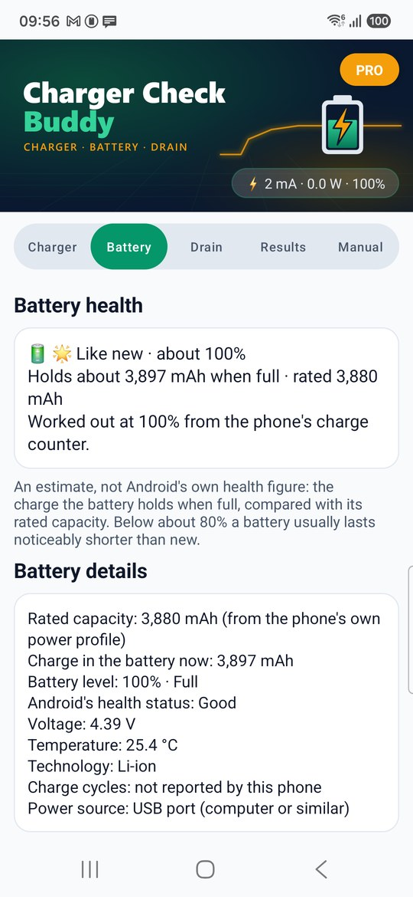
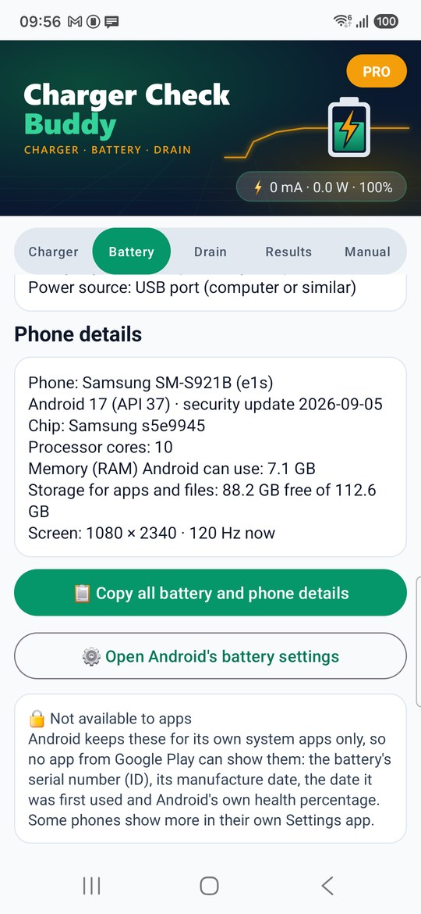
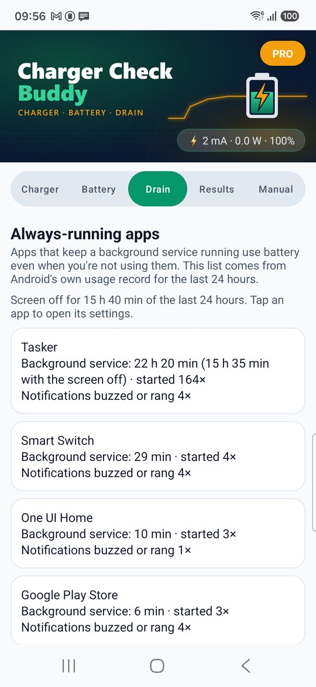
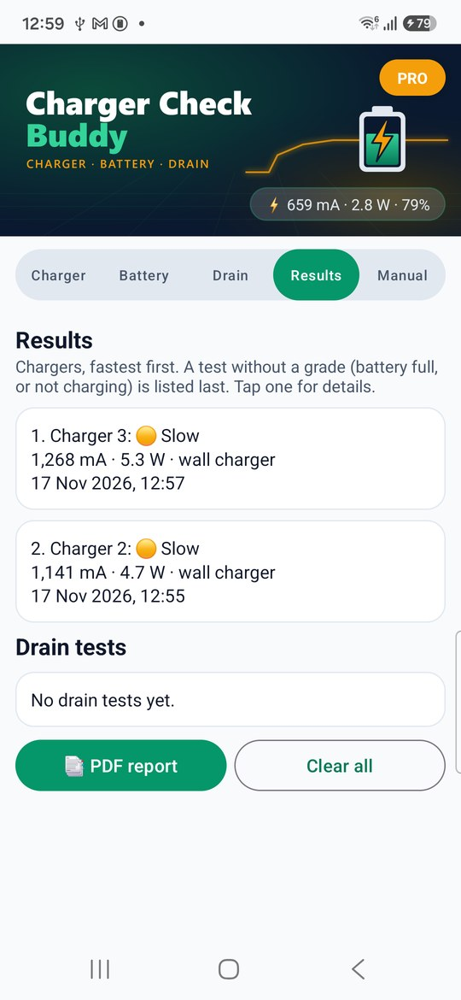

📖 Charger Check Buddy Manual
Everything below is the same text as the Manual tab in the app.
What Charger Check Buddy does
Charger Check Buddy measures how much current really goes into your battery from each charger and cable, estimates how healthy the battery is, and shows which apps keep running in the background. Every number is measured or read by this phone.
It doesn't change any settings and doesn't run in the background.
To keep this manual, tap 📤 Share the manual at the top of the Manual tab: it makes a PDF to save, email or print.
Charger tab: charger test
- The card at the top shows what the phone reads now: what it's plugged into (wall charger, USB port or wireless charger), the current going into the battery in mA, the power in W, the battery %, its temperature and voltage. Where the phone gives them, it also shows whether fast charging is on and Android's own estimate of the time to full.
- Plug in the charger and cable you want to test and tap ▶ Test this charger (1 minute). Give it a name you'll recognise, for example "Kitchen plug + white cable".
- The test reads the current once a second for 1 minute. The first 10 seconds aren't counted: the phone takes a few seconds to settle on a charging speed.
- During the test the app keeps the screen on at the same brightness, so every charger is tested the same way. Keep the phone still and the app open: leaving the app or unplugging stops the test.
- The result shows the average current and power into the battery, the lowest and highest current, and the battery % and temperature.
Good to know: this is the power that goes into the battery. The charger gives a little more, because the phone itself uses some. The phone decides how fast it charges, so a charger can't go faster than the phone allows.
A fair comparison
- Test every charger and cable below 80% battery. Phones charge slower above about 80% to protect the battery; a test above 80% says so in the result.
- When the battery is full or nearly full, or the phone is plugged in but not charging (for example battery protection stops charging at 80% or 85%), the test can't grade the charger and says so.
- To find a bad cable, test two cables with the same plug. To compare plugs, use the same cable.
- Phones charge slower when warm: the result says if the battery was 40 °C or warmer.
Battery tab
- Health (estimate): the charge the battery holds when full, compared with its rated capacity. The app divides the phone's charge counter by the battery %. It needs 50% or more and is most exact at 95% or more, so charge to 100% and look again for the best figure.
- The rated capacity comes from the phone's own power profile (the figure the maker gives Android). It's usually the maker's minimum, so a new battery can show a little over 100%.
- Battery details: charge in the battery now, level, Android's health status, voltage, temperature, technology, charge cycles (only where the phone reports them) and power source.
- Phone details: model, Android version and security update, chip, processor cores, the memory (RAM) Android can use, storage for apps and files, and the screen. A phone sold as 8 GB or 128 GB shows a little less here, because Android itself keeps some.
- 📋 Copy all battery and phone details puts everything on the clipboard, ready to paste into a message, email or note.
- ⚙️ Open Android's battery settings opens the phone's own battery page.
Not available to apps: Android keeps the battery's serial number (ID), its manufacture date, the date it was first used and Android's own health percentage for its system apps only, so no app from Google Play can show them.
Drain tab: always-running apps
- Apps that keep a background service running use battery even when you're not using them. The list comes from Android's own usage record for the last 24 hours.
- For each app it shows how long it kept a background service running, how much of that was with the screen off, how many times it started one (or that it was already running 24 hours ago), and how many new notifications it showed.
- Tap an app to open its settings: the Battery option there lets you limit its background use.
- It needs Usage access: tap Allow usage access, find Charger Check Buddy and switch it on. Nothing leaves your phone.
Good to know: Android doesn't let apps read the battery used by each app, so the list shows what Android does record: background time. Settings › Battery shows Android's own use per app.
Drain test (Pro)
- Measures how fast the battery really empties, for example overnight, and which apps ran meanwhile.
- Unplug the phone and tap ▶ Start a drain test. Use the phone as normal or leave it. Finish after at least 1 hour.
- Nothing runs in the background: the app notes the battery's charge when you start and when you tap ✅ Finish, so it doesn't add drain of its own.
- The result shows the test time, the battery % at the start and end, the mAh used and the average current, the drain in % per hour with a grade, the screen-off and screen-on time, and the apps that kept a background service running.
- If the phone was charged during the test, the result can't be measured: start a new one.
Grades
Grades are Charger Check Buddy's guide:
- Charging (power into the battery): 🌟 Fast 15 W or more · 🟢 Good 7.5 W or more · 🟡 Slow 2.5 W or more · 🔴 Very slow under 2.5 W (about what a computer's USB port gives).
- Battery health (estimate): 🌟 Like new 90% or more · 🟢 Good 80% or more · 🟡 Worn 70% or more · 🔴 Very worn under 70%.
- Drain (battery used per hour): 🌟 Low drain up to 0.5% · 🟢 Normal up to 1% · 🟡 High up to 2% · 🔴 Very high above 2%.
Pro
Pro is one payment for life, with no subscription. It adds:
- ⭐ Results: every charger and cable you test, ranked fastest first
- ⭐ Drain test: how fast the battery empties and which apps ran
- ⭐ All your results kept, delete one or clear all
- ⭐ PDF report with your battery and phone details, your chargers ranked and your newest drain test
Everything else is free. Tap GO PRO at the top to buy or to restore a purchase on a new phone.
Privacy
- No account and no sign-in.
- Results are kept on this phone only. They aren't backed up to the cloud and aren't copied to a new phone.
- The app has no internet use of its own (only Google Play for the Pro purchase).
- Usage access is only read on this phone, to list the apps that ran in the background.
- A PDF only leaves the phone if you share it.
About
Charger Check Buddy v1.5 (Build 9)
Publisher: AppStack Studio
⚡ WHY CHARGER CHECK BUDDY
Charger Check Buddy only shows what your phone measured or reported, and says plainly what Android lets an app see and what it doesn't.
| Question |
Typical battery apps |
Charger Check Buddy |
| Which charger and cable are fastest? |
A live number that jumps around |
A 1-minute test at the same screen brightness for every charger, averaged and graded |
| Is the result fair? |
Not explained |
Says when it can't grade: battery full, not charging, above 80% or too warm |
| How healthy is my battery? |
Often a guess after weeks of tracking |
An estimate from the phone's charge counter and the rated capacity in its own power profile, with both numbers shown |
| What drains my battery? |
"Battery saver" or "cleaner" buttons |
The apps Android recorded running in the background, with the time each one ran with the screen off |
| Battery serial number or manufacture date |
Sometimes claimed |
Not shown: Android keeps them for system apps only, and the app says so |
| Price |
Often a subscription |
Free, Pro is one payment for life (no subscription) |
⚠️ IMPORTANT DISCLAIMER
- The charger test measures the power going into the battery. The charger gives a little more, because the phone itself uses some, and the phone decides how fast it charges.
- The battery health figure is an estimate, not Android's own health figure.
- Android doesn't let apps read the battery used by each app. The always-running list shows background time from Android's own usage record.
- Charger Check Buddy is not affiliated with any phone maker or charger maker.

1. Charger
The current going into the battery, live, and the graph and result of the last 1-minute test.

2. Battery
The health estimate and every battery detail Android gives apps.

3. Phone details
Model, Android, chip, memory, storage and screen, ready to copy.

4. Drain
The apps that kept a background service running in the last 24 hours.

5. Results (Pro)
Every charger you tested, fastest first.
Screenshots: real readings on a Samsung Galaxy S24.